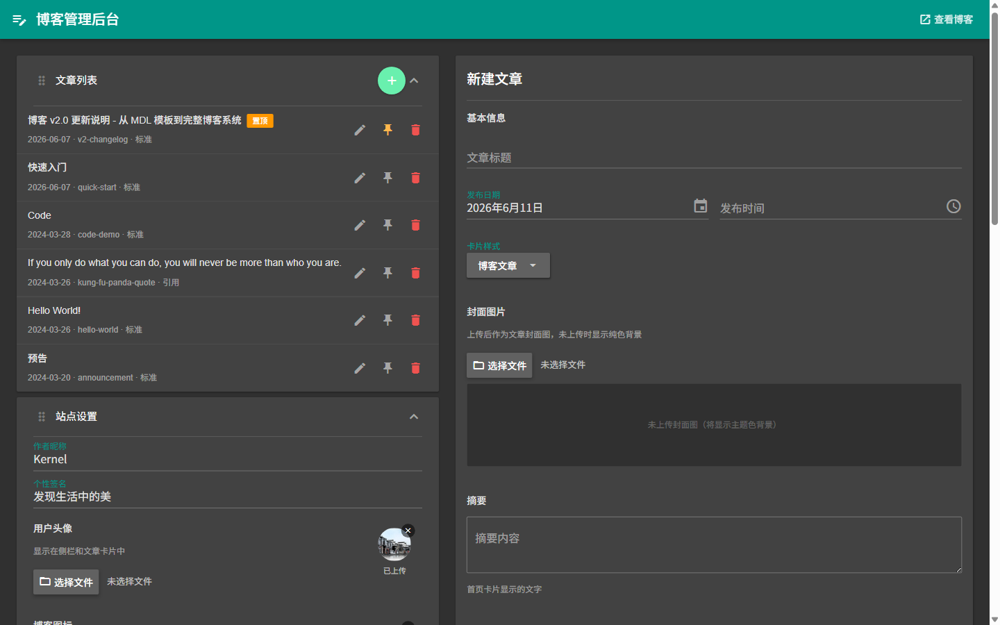
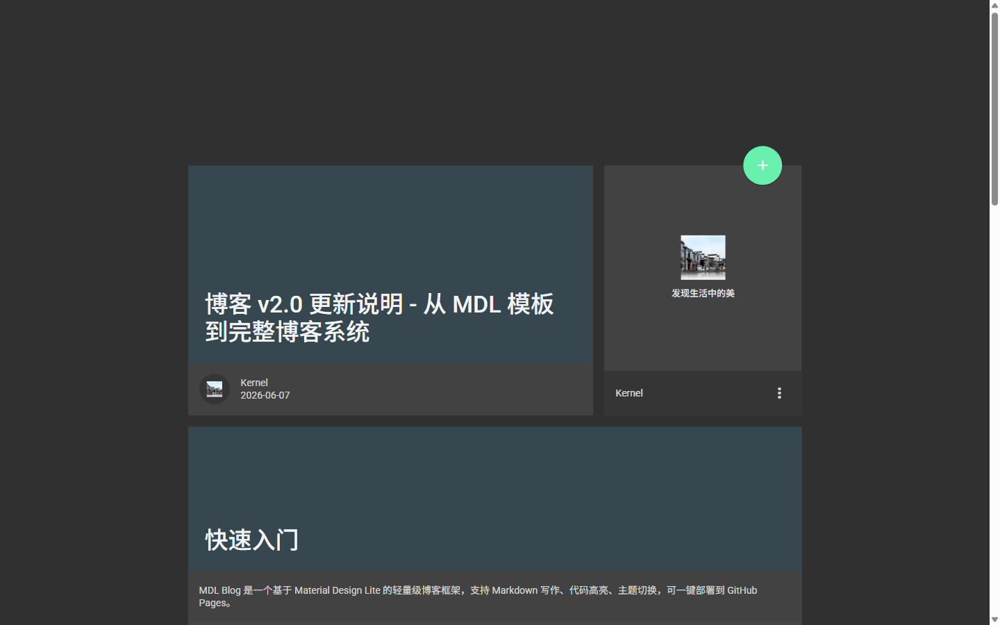
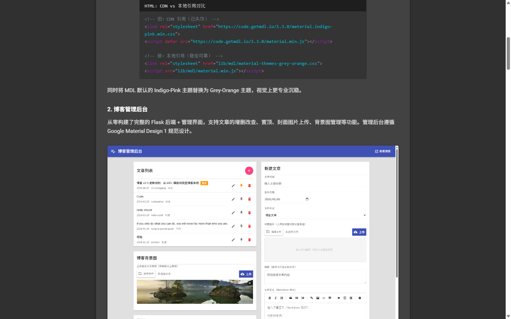
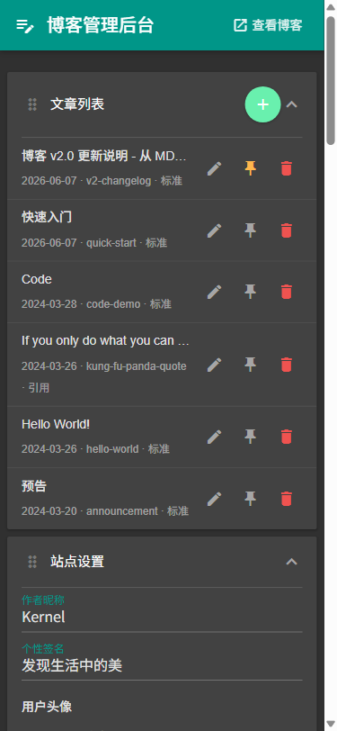
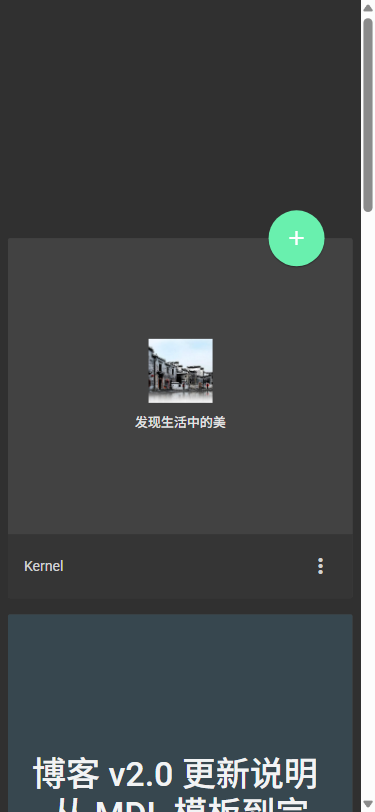

博客 V2.1 迭代记录 - 主题系统、暗色模式与 MD1 规范化
前言
v2.0 发布后，博客系统进入了密集迭代期。本文汇总了第二轮开发中的所有改动，涵盖主题系统、暗色模式、移动端适配、管理后台组件规范化等核心模块，并附带实际截图。所有改动均严格遵循 Google Material Design 1 设计规范。
1. 11 套 MDL 主题配色系统
博客从单主题扩展为 11 套配色方案。管理后台提供色板选择器，点击即切换，所有页面（首页、文章详情、管理后台）同步响应主题变化。

技术实现上，通过 Python 后端注入 CSS 自定义属性（--md-primary、--md-accent 等），替代了所有硬编码的颜色值。主题切换时只需更换引用的 MDL 主题 CSS 文件，其余颜色通过变量自动跟随。
def theme_vars_css(site):
theme = site.get('theme', 'indigo-pink')
colors = _THEME_COLORS.get(theme, _THEME_COLORS['indigo-pink'])
return f''' :root {{
--md-primary: {colors['primary']};
--md-accent: {colors['accent']};
--md-primary-dark: {colors['primary_dark']};
--md-accent-dark: {colors['accent_dark']};
}}'''2. 完整暗色模式
暗色模式覆盖范围包括：博客首页、文章详情页、管理后台。支持三种模式切换——明亮、黑暗、根据系统设置自动切换。

文章详情页的暗色模式需要处理更多元素：代码块容器、行内代码、引用块、图片圆角边框、文章导航按钮等，全部通过 html[data-mode="dark"] 选择器覆盖。

关键实现细节：
- 背景图处理：暗色模式下通过
background-image: none !important移除自定义背景图，因为background-color无法遮盖background-image（CSS 层叠顺序导致） - Switch 组件：On 状态使用
color-mix(in srgb, var(--md-primary) 50%, transparent)替代opacity: 0.5，避免父级透明度影响子元素 thumb 的颜色 - 高优先级覆盖：MDL 的
.mdl-color-text--grey-600等工具类具有高特异性，暗色模式覆盖必须使用!important
/* 错误方案：opacity 影响子元素 thumb */
.md-switch .md-switch__track {
opacity: 0.5; /* thumb 也会变半透明！ */
}
/* 正确方案：color-mix 仅影响 track 自身 */
.md-switch .md-switch__track {
background: color-mix(in srgb, var(--md-primary) 50%, transparent);
}3. 页脚 Switch + 暗色模式切换
博客前端页脚新增了 MD1 规范的 Switch 组件和图标按钮。Switch 切换时通过 JS 修改 <html> 的 data-mode 属性，并调用后端 API 持久化设置。
(function() {
var checkbox = document.querySelector('.md-switch__input');
if (!checkbox) return;
checkbox.addEventListener('change', function() {
var mode = this.checked ? 'dark' : 'light';
document.documentElement.setAttribute('data-mode', mode);
fetch('/api/settings', {
method: 'PUT',
headers: {'Content-Type': 'application/json'},
body: JSON.stringify({darkMode: mode})
});
});
})();4. 管理后台移动端全面适配
管理后台从桌面端单一布局扩展为三级响应式断点：桌面（>768px）、平板（480-768px）、手机（<480px）。

适配覆盖的模块包括：
- 文章列表 / 导航管理的数据表格（列间距压缩）
- 编辑器底部按钮换行、工具栏自动折叠
- 日期/时间字段竖向堆叠
- 主题色板网格自适应
- 设置页面上传区域堆叠
- Dialog / 日期选择器 / 时间选择器宽度自适应
/* Grid 子元素默认 min-width: auto，会被内容撑开 */
/* 必须显式设置 min-width: 0 防止溢出 */
.md-form-group {
display: grid;
grid-template-columns: 120px 1fr;
}
.md-form-group > * {
min-width: 0; /* 关键：允许 Grid 子项收缩 */
}5. MD1 组件规范化实现
管理后台的多个组件严格按照 m1.material.io 规范重新实现或修正：
Snackbar 消息通知
完全遵循 MD1 Snackbar 规范：
- 桌面端：居中显示，高度 48dp，最小宽度 288dp，最大宽度 568dp，2dp 圆角
- 移动端：宽度 = 屏幕宽度 - 16dp，底部贴边，无圆角，
translateY(100%)入场动画 - 操作按钮：Roboto Medium 14sp 全大写，左内边距 48dp
Dialog 对话框
删除确认等场景使用带标题栏的 Alert Dialog：标题 Roboto Medium 20sp，内容 14sp，24dp 内边距，24dp 阴影，操作区域 52dp 高度。
Text Field 文本字段
遵循 MD1 单行 / 多行文本字段规范：浮动标签 12sp 主色，输入文字 16sp 87% 黑色，底部线条 1dp（聚焦时 2dp）。长标签使用 text-overflow: ellipsis 截断。
Datepicker 日期选择器
自研实现，严格遵循 MD1 规范，包含多项细节修正：
/* 错误：.md-datepicker-day--today 声明在 --selected 之后，同特异性下后者覆盖前者 */
.md-datepicker-day--selected {
color: #fff;
background: var(--md-primary);
}
.md-datepicker-day--today {
color: var(--md-primary); /* 覆盖了 selected 的白色文字！ */
}
/* 正确：用 :not() 排除已选中的今天 */
.md-datepicker-day--today:not(.md-datepicker-day--selected) {
color: var(--md-primary);
}- 月份切换滑动动画（200ms slide-in/slide-out）
- 移动端下拉菜单使用
position: fixed+getBoundingClientRect()定位，避免overflow: hidden裁剪 - 暗色模式：选中日期悬停色、月份/年份悬停高亮、禁用/非当月日期透明度
Switch 开关
尺寸严格遵循 MD1 规范：Track 36×14dp，Thumb 20dp（无边框），行程 16dp，48×48dp 触摸目标。附加 MDL Ripple 效果。
.md-switch__track {
width: 36px;
height: 14px;
border-radius: 7px;
}
.md-switch__thumb {
width: 20px;
height: 20px;
border: none; /* MD1: thumb 无边框 */
top: -3px; /* (14 - 20) / 2 = -3 */
transition: left 0.2s;
}
/* On 状态：thumb 左移 16dp */
.md-switch__input:checked + .md-switch__thumb {
left: 16px;
}6. Sidebar 导航菜单暗色模式
侧边栏在暗色模式下切换为深色背景（#212121），菜单项文字 70% 白色，悬停 12% 白色高亮，分割线 12% 白色。当前激活项保持主色调指示条。
7. 按钮悬停色跟随主题
引入 --md-primary-dark 和 --md-accent-dark CSS 变量，使按钮 hover 状态、编辑提示栏背景色自动跟随当前主题，无需为每个主题单独写悬停规则。
8. 文章详情页优化
- minilogo 头像路径修正：修复了文章页小头像因相对路径计算错误导致无法显示的问题
- 预览页面 1:1 匹配：
/api/preview端点现在返回与blog/posts/*.html完全相同的模板，包括返回按钮、底部栏、Switch 等 - 编辑提示栏主题色：编辑中的提示条颜色跟随
--md-primary变量
9. 导航文案与引用卡片
文章底部导航文案改为中文"前一篇"/"后一篇"，移除箭头符号。引用卡片（名言警句）不生成详情页、不出现在导航中、首页无链接。
10. 博客首页移动端

首页在移动端保持卡片流式布局，封面图自适应宽度，页脚 Switch 和图标按钮竖向排列。
11. 管理后台暗色模式
管理后台暗色模式覆盖了所有自定义组件：文本字段、下拉菜单、卡片、 Snackbar、Dialog、日期选择器、进度条、上传区域等。全局使用 --md-primary 变量确保主题色一致性。
总结
本轮迭代的核心方向是规范化和全平台覆盖：
- 11 套主题配色 + CSS 变量系统，一键切换全局配色
- 完整暗色模式（博客前端 + 管理后台 + 所有组件）
- 管理后台三级响应式断点（桌面 / 平板 / 手机）
- 6 个自定义组件严格遵循 MD1 规范（Snackbar、Dialog、Text Field、Datepicker、Switch、Tooltip）
- 页脚 Switch 实时切换 + 后端持久化
- 多项 CSS 细节修正（opacity 陷阱、Grid 溢出、 specificity 冲突、position: fixed 定位）
博客系统现已具备完整的前后台体验，覆盖桌面和移动端，支持明亮/暗色双模式。后续计划包括评论系统和更多主题定制选项。